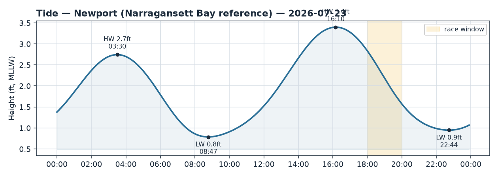
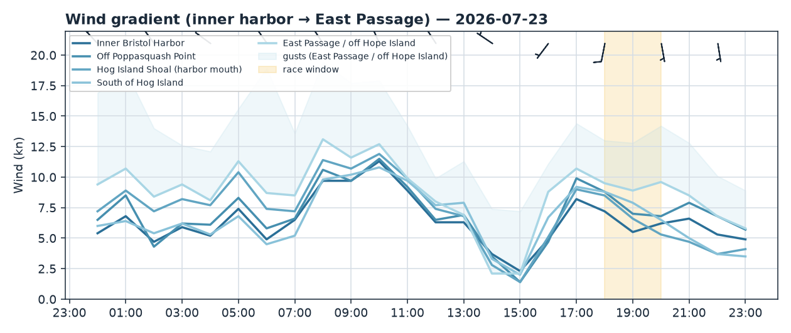
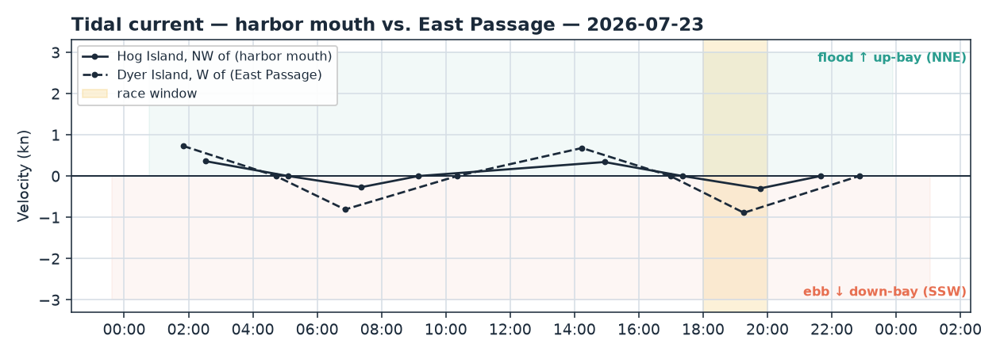

Bristol Harbor · Rhode Island
Thu 23 Jul 2026 · 18:00–20:00
Light-moderate S/SSW evening sea breeze, 3 kt stronger seaward; building ebb sets SSW down-bay against the wind through the whole window — falling tide, no shallow worry.
Wind
A soft-to-moderate southerly sea breeze — S/SSW, averaging 6–9 kt with gusts to 13–15. The story is the seaward gradient: it builds cleanly from the inner harbor out. Inner Bristol Harbor runs ~6 kt (186→166, backing a touch toward SSE), Poppasquash Point ~7.5 kt, the Hog Island mouth ~7 kt, and the East Passage / off Hope Island the strongest at ~9 kt from ~180–185. That's roughly 3 kt more pressure to the S/seaward — the classic sea-breeze signature funnelling up the Passage over Hog Island.
Confidence is high: model spread is tiny at every fix (0.0–1.6 kt), and wind_check has obs and model within 1% (ratio 0.99). The live picture backs it — Newport at the Passage mouth has clocked from the N through to SW (218°) at 11–13 kt over the last two hours, exactly a sea breeze filling in; Conimicut up-bay reads W at ~7 kt. Expect the breeze in the harbor to be the lighter, slightly more backed (SSE) end of the range, veering back toward S as you clear toward open water.
Current
Ebb, and building through the entire window. At the harbor mouth (Hog Island NW) slack was 17:22, so the ebb is filling in as the race starts, running toward peak around 19:46 (~0.3 kt, set 199° SSW) — weak inside the gut. In the East Passage (Dyer Island) the ebb is materially stronger, peaking near 19:16 at ~0.9 kt, set ~216° SSW down-bay/seaward. Next slack isn't until well after the finish (21:39 mouth / 22:51 Passage), so plan on foul-if-going-N / fair-if-going-S current the whole time.
Note the wind-against-tide setup: breeze from S/SSW, ebb setting SSW — the flow opposes the wind, so expect steeper, shorter chop, worst in the mid-Passage channel where the ebb is fastest.
Tide
High water was 16:10 (3.40 ft); the tide is falling all through the window toward a 0.95 ft low at 22:44 — well after the finish. Heights sit comfortably in the 2.5–3 ft range during racing, so no real shallow-water concern, though keep it in mind for any committee-boat anchoring or marks tucked against the harbor edges as the water drops.
Tactical call
Two levers pull against each other. Pressure lives to the S/seaward — Hog Island south and the East Passage are ~3 kt stronger and the breeze is more stable there. But the ebb (SSW) also lives seaward and strongest in the Passage channel, so pushing for that pressure means punching into the most current and the sharpest wind-against-tide chop.
- Heading up-bay (N): the ebb is foul. Stay off the mid-channel SSW set — work the shallower shore edges (Poppasquash to the W, the Bristol waterfront to the E) to duck the strongest flow. In the East Passage this matters most.
- Heading down-bay (S/seaward): the ebb is fair — ride the channel axis for the free push, and you also sail into more breeze. Big gain on that lane.
- Watch the backing trend inside the harbor (dir easing toward SSE) — stay in phase with the S/SSW oscillations rather than committing hard to one shore in the lighter inner-harbor air.
If the course is set: - N–S windward/leeward: the E–W shore choice is your current lever on the N (upwind, foul-ebb) legs — favour the shallower edges; on the S legs, take the channel for fair current and more pressure. - J-hook out of the harbor: you start in near-slack inner-harbor air, then hook into progressively stronger ebb and breeze at the mouth/Passage — the favored lane flips once you round; call it by leg. - Around Hog Island: the set reverses relative to each leg — fair and breezy running S/SW past the island, foul beating back N; hug the tips' shore edges on the up-bay legs. - Out-and-back (light air): pressure dominates — get S toward the Passage breeze; the fair ebb helps you out and you'll want the extra knots to punch the foul current on the way home.
See 2026-07-23_wind.png, 2026-07-23_current.png, and 2026-07-23_tide.png.


